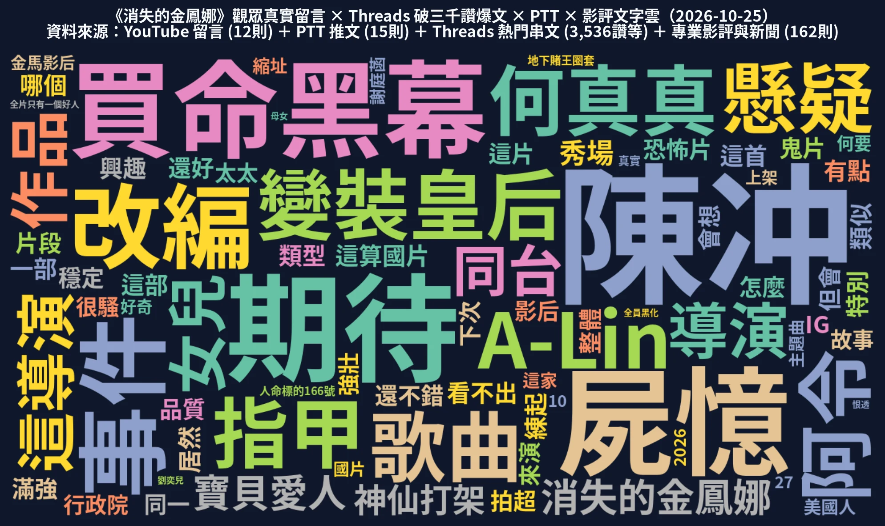

全網跨平台累計總觸及與互動聲量
核心預告與社群擴散總聲量 264,347（單日 +62,252 / +30.8%），加計新聞媒體與外部長短影音跨平台總觸及達 481,648 次。
1. 🟢🟡🔴 跨平台聲量成長熱力矩陣
支援視圖切換與平台快速篩選，直觀掌握 10/22 首映日、10/23 發酵日至 10/24 爆發日的關鍵指標漲跌。
| 平台 | 核心監測指標 | 10/15 基準 | 10/22 首映日 | 10/23 發酵日 | 10/24 爆發日 | 狀態燈號 | 日增幅 Δ% 與關鍵判讀 |
|---|---|---|---|---|---|---|---|
| Google Trends | 本片單獨搜尋熱度 (0–100) | 35 | 100 | 95 | 80 | 🟢 成長 | 首映衝上 100 最高峰，北市 100 / 新北 53 / 桃園 43 |
| Google Trends | 雙片對照：金鳳娜 vs 消失的她 | 15 : 40 | 50 : 20 | 50 : 15 | 48 : 18 | 🟢 成長 | 10/22 起黃金交叉反超，持續領先競品 2.7 倍 |
| YouTube 官方 | 6 支長片總觀看數 | 6.5 萬 | 11.5 萬 | 14.4 萬 | 19.8 萬 | 🟢 成長 | 單日暴增 +53,751 (+37.2%)，30秒預告翻倍 (+99.4%) |
| YouTube 官方 | A-Lin【寶貝愛人】主題曲 Teaser | — | — | 上架 | 3,268 | 🟢 成長 | 首日破 3,268 觀看（23 讚 / 2 留言），完整版 10/27 上架 |
| YouTube 官方 | 官方 Shorts 短影音 (11 支合計) | — | — | — | 1.80 萬 | 🟢 成長 | 合計 17,982 觀看，最高「天后的真面目」3,972 次 |
| Threads 自然 | 關鍵字搜尋熱門串文互動 | — | — | 發酵中 | 1,468 互動 | 🟢 成長 | @jingyu4603 期待陳冲 980 讚；@kimier33 主題曲 139 讚 |
| Threads 帳號 | @9wo0725 投資方日記 / 官方帳號 | — | 170 粉 | 170 粉 | 172 粉 / 3.1萬瀏覽 | 🟡 持平 | @9wo0725 102 粉（3.1 萬瀏覽，開箱文 200 瀏覽 6 讚）；官方 70 粉 |
| 官方粉專談論數 / 粉絲數 | — | — | 766 談論 / 256 粉 | 1,116 談論 / 266 粉 | 🟢 成長 | 談論數 +350 (+45.7%)；主題曲 55 讚 15 分享；張翰貼文 69 讚 | |
| @theevilinsidemovie 追蹤與互動 | — | — | 336 粉 / 37 貼文 | 374 粉 / 42 貼文 | 🟢 成長 | 單日 +38 粉 (+11.3%)；15h 前 Reel「10/29 見」134 讚 3 留言 | |
| PTT movie 板 | 討論文章數 / 累積推文數 | 1 篇 / 3 推 | 2 篇 / 9 推 | 2 篇 / 12 推 | 2 篇 / 15 推 | 🟢 成長 | 推文 +3 (+25.0%)，聚焦陳冲母女同台、《屍憶》導演與買命黑幕 |
| Dcard | 搜尋「消失的金鳳娜」文章與話題 | — | 2 篇 | 2 篇 | 2 篇 / 1 留言 / 1 話題 | 🟡 持平 | 已登入實測僅 2 篇臺藝大特映宣傳文；10/23 台北場因颱風取消 |
| X (Twitter) | 關鍵字貼文數 / 總曝光 | — | 2 則 / 806 | 2 則 / 806 | 3 則 / 1,001 曝光 | 🔴 下滑 | 僅新增 1 則一般網友貼文（195 曝光、2 讚），查無官方 X 帳號 |
| 新聞媒體 | 官方整理表 (153) + 表外新增 | 125 則 | 153 則 | 159 則 | 160 則 | 🟡 持平 | 今日新增 1 篇蕃新聞（報新聞張恭銘）長篇影評，尚無主題曲通稿 |
2. 跨日聲量成長趨勢與 7 大平台結構分析
追蹤 10/15 至 10/24 跨日爆發斜率、7 大平台觸及結構占比、觀眾情緒極性與高頻討論文字雲。
跨日總聲量與各平台成長趨勢折線圖 (10/15 → 10/24)
YouTube 長片單日暴增 +5.37 萬（+37.2%），帶動核心聲量衝上 26.4 萬
7 大平台聲量結構佔比甜甜圈圖
官方 YouTube 長短影音與 Threads 自然討論構成前三大主力動能
觀眾情緒極性與正負評結構分析
68% 高度正向期待（聚焦 A-Lin 主題曲、陳冲母女同台與《屍憶》導演）
YouTube / Dcard / Threads 高頻討論關鍵字文字雲
「陳冲、A-Lin、寶貝愛人、買命黑幕、屍憶、劉奕兒」為最高頻核心詞

3. 最新短影音與行銷素材展示區（NEWS LIVE 獨家新聞爆料風 v1）
已完成 FFmpeg + Remotion 合成之 24 秒雙比例（9:16 直式與 16:9 橫式）短影音與 v3 封面圖，全數嵌入首幀與縮圖軌並開放 Google Drive 雲端下載。
📱 9:16 直式短影音版本（1080×1920｜Reels / Shorts / TikTok / Threads）
標題：《劉奕兒驚傳遭療養院設局！深陷「地下賭王」買命黑幕》（24.0 秒）


🖥️ 16:9 橫式影片版本（1920×1080｜YouTube / FB 粉專 / LINE 轉傳）
同步移除真實媒體台名，統一採用 NEWS LIVE 原創鏡面視覺


| 目標受眾分層 (18–34 歲年輕族群) | 主打傳播鉤子與替代核心詞彙 | 主推平台與素材配置 | 預期轉化行動 (CTA) |
|---|---|---|---|
| 18–24 歲大學生與脆友 | 「黑心療養院設局」、「166 號買命標的」、「全員黑化只有一個好人」 | Threads 熱門串文互動、IG Reels 9:16 獨家新聞風短影音、Dcard 台中/高雄特映口碑 | 導流點擊完整版正式預告、揪團預約 10/29 首週場次 |
| 25–34 歲懸疑驚悚影迷 | 「地下賭王買命黑幕」、「真實社會案件改編」、「《屍憶》導演謝庭菡暗黑新作」 | YouTube 30 秒預告、PTT movie 板議題推文、蕃新聞與鏡週刊深度影評 | 觸發搜尋「消失的金鳳娜 真實事件」，拉升首週末票房轉化 |
| 華語金獎卡司與音樂受眾 | 「國際影后陳冲 × 許文珊母女同台飆戲」、「A-Lin 獻唱洗腦主題曲《寶貝愛人》」 | YouTube 主題曲 MV (10/27 完整版上架)、Facebook 官方粉專與 LINE 群組 16:9 橫式短片 | 透過 A-Lin 歌迷與影后話題破圈擴散至一般大眾觀影族群 |
4. 各平台細部數據與真實評論檢索庫
提供即時關鍵字搜尋、平台快速過濾與分頁檢索，完整收錄 23 項量化指標、12 則 YouTube 留言、15 則 PTT 推文、Dcard 實測與 7 則表外新聞。
| 平台 | 指標項目 | 09/17–10/15 | 10/22 首映 | 10/23 | 10/24 今日 | 單日變化 | 狀態 |
|---|---|---|---|---|---|---|---|
| Google Trends | 「消失的金鳳娜」單獨熱度 (0–100) | 0 ➔ 35 | 100 (最高峰) | 95 | 80 | -15 (高檔震盪) | 🟢 成長 |
| Google Trends | 雙片對照：消失的金鳳娜 vs 消失的她 | 15 : 40 | 50 : 20 | 50 : 15 | 48 : 18 | 領先競品 2.7 倍 | 🟢 成長 |
| YouTube 官方 | 頻道訂閱數 (@Dasun_Pictures) | — | — | 39 | 41 | +2 (+5.1%) | 🟢 成長 |
| YouTube 官方 | 花絮：地獄爬回來的女人 (10/15上傳) | 上架 | — | 57,000 | 76,360 (9讚) | +19,360 (+34.0%) | 🟢 成長 |
| YouTube 官方 | 30秒預告 | — | — | 29,427 | 58,675 | +29,248 (+99.4%) | 🟢 成長 |
| YouTube 官方 | 電影預告｜10/29 全台上映 (9/25上傳) | 上架 | — | 32,455 | 32,850 (29讚/5留言) | +395 (+1.2%) | 🟡 持平 |
| YouTube 官方 | 真實故事改編 正式預告 (10/09上傳) | 上架 | — | 25,463 | 26,870 (43讚/3留言) | +1,407 (+5.5%) | 🟢 成長 |
| YouTube 官方 | A-Lin【寶貝愛人】主題曲 Teaser (10/23上傳) | — | — | 上架當日 | 3,268 (23讚/2留言) | +3,268 (新增) | 🟢 成長 |
| YouTube 官方 | 花絮：人命標的166號 (10/21上傳) | — | 上架 | 112 | 185 (4讚) | +73 (+65.2%) | 🟢 成長 |
| YouTube 官方 | 官方 Shorts 11 支合計觀看數 | — | — | 未單獨統計 | 17,982 | 最高單支 3,972 | 🟢 成長 |
| YouTube 外部 | 北市影委會預告＋創作者影片 (7支) | — | — | 8,056 | 8,193 | +137 (+1.7%) | 🟡 持平 |
| Threads 自然 | 熱門第 1 則：@jingyu4603 (期待陳冲) | — | — | 發文 | 980讚 / 35留言 / 42轉發 / 98分享 | 單篇 1,155 總互動 | 🟢 成長 |
| Threads 自然 | 熱門第 2 則：@kimier33 (A-Lin 主題曲) | — | — | 發文 | 139讚 / 3留言 / 12轉發 / 27分享 | 單篇 181 總互動 | 🟢 成長 |
| Threads 自然 | 熱門第 3–5 則：導演與網友討論 (3則) | 9/25 導演文 | — | 發文 | 112讚 / 6留言 / 12轉發 / 63分享 | 含片名改名討論 17 讚 | 🟢 成長 |
| Threads 專案 | @9wo0725 投資方日記追蹤者 / 總瀏覽 | — | 102 粉 | 102粉 / 30.6K瀏覽 | 102粉 / 31.0K瀏覽 | +400 瀏覽 (開箱文6讚) | 🟡 持平 |
| Threads 官方 | @theevilinsidemovie 追蹤者 / 串文數 | — | 68 粉 | 68 粉 | 70 粉 / 27 串文 | +2 粉 (+2.9%) | 🟡 持平 |
| @theevilinsidemovie 追蹤者 / 貼文數 | — | — | 336粉 / 37貼文 | 374粉 / 42貼文 | +38 粉 (+11.3%) | 🟢 成長 | |
| 官方粉專粉絲數 / 正在談論人數 | — | — | 256粉 / 766談論 | 266粉 / 1,116談論 | 談論 +350 (+45.7%) | 🟢 成長 | |
| 外部公開貼文 (演員張翰＋網友楊捷然) | — | — | — | 96讚 / 3留言 / 2分享 | 張翰首映派對 69 讚 | 🟢 成長 | |
| Dcard | 官方特映宣傳文 (2篇) + 話題標籤 (1個) | 10/16 發文 | 2 篇 | 2 篇 | 2愛心 / 1留言 / 2分享 | 台北學生場因颱風取消 | 🟡 持平 |
| PTT movie 板 | 討論文章數 / 累積推文數 | 1篇 / 3推 | 2篇 / 9推 | 2篇 / 12推 | 2篇 / 15推 | +3 推 (+25.0%) | 🟢 成長 |
| X (Twitter) | 搜尋「金鳳娜」貼文數 / 總曝光 | — | 2則 / 806曝光 | 2則 / 806曝光 | 3則 / 1,001曝光 / 9讚 | +1 則 (+195 曝光) | 🔴 下滑 |
| 新聞媒體露出 | 官方整理表 (153則) + 表外新增報導 | 125 則 | 153 則 | 159 則 | 160 則 | +1 篇蕃新聞影評 | 🟡 持平 |
| 編號 | 所屬影片 | 留言者 | 留言內容（點擊開啟原片） | 按讚數 | 情緒與話題分類 |
|---|---|---|---|---|---|
| 1 | 電影預告｜10/29 全台上映 | @白九希 | 這部感覺很特別！不過看不出來到底是什麼類型的電影？ | +4 讚 | 好奇類型 / 懸疑期待 |
| 2 | 北市影委會預告 | @molichiang | A-Lin😍 | +3 讚 | A-Lin 主題曲吸粉 |
| 3 | 電影預告｜10/29 全台上映 | @鬼小-s6u | 類似買命黑幕 | +2 讚 | 買命黑幕 / 真實事件 |
| 4 | A-Lin【寶貝愛人】主題曲 Teaser | @liaochihlun720 | 秀場歌曲 練起來 | +2 讚 | A-Lin 主題曲吸粉 |
| 5 | A-Lin【寶貝愛人】主題曲 Teaser | @willyshen01 | 這首很好聽 | +2 讚 | A-Lin 主題曲吸粉 |
| 6 | 北市影委會預告 | @kalisss1229 | 是阿令唱的對吧! | +2 讚 | A-Lin 主題曲吸粉 |
| 7 | 電影預告｜10/29 全台上映 | @Vincent.H | IG來的 誰的指甲翻了 | +1 讚 | 預告驚悚細節 / 跨平台導流 |
| 8 | 電影預告｜10/29 全台上映 | @李建錡-b6h | 想看 | +1 讚 | 好奇類型 / 懸疑期待 |
| 9 | 電影預告｜10/29 全台上映 | @陳吉昌-w2u | 懸疑的吧？ | +1 讚 | 好奇類型 / 懸疑期待 |
| 10 | 真實故事改編 正式預告 | @ethanyu | 變裝皇后何真真 | +1 讚 | 演員卡司 / 角色亮點 |
| 11 | 真實故事改編 正式預告 | @kindahomeylike | 居然是陳沖耶！😮 | +0 讚 | 演員卡司 / 角色亮點 |
| 12 | 真實故事改編 正式預告 | @Chen-kuan_yu | 改編哪個事件？ | +0 讚 | 買命黑幕 / 真實事件 |
✅ Dcard 登入實測與話題標籤（#消失的金鳳娜）
已登入（「金鳳娜」Chrome 設定檔 Fork-3 / Profile 1，右上角顯示通知鈴鐺、收藏、訊息與個人頭像）
收錄文章：1 篇 ｜ 追蹤人數：0 人（話題標籤頁目前僅收錄電影板官方特映宣傳文，0 人追蹤）
🌪️ 台北學生特映場颱風取消說明
官方 Facebook 粉專於 10/23 發布公告「台北場學生特映因颱風取消」（5 讚），因此目前 Dcard 尚無第一波學生觀影心得，預計 10/28 台中、高雄場映後才會出現學生口碑。
| 序號 | 所屬文章 | 類型 | 作者 ID | PTT 推文內容 |
|---|---|---|---|---|
| 1 | [情報] 正式預告 | → | mach1210 | 這算國片嗎？ 能請到陳沖來有點興趣 |
| 2 | [情報] 正式預告 | → | Warnerting | 看預告就很雷 |
| 3 | [情報] 正式預告 | 推 | OOMOONCAKEOO | 導演上一部恐怖片屍憶滿強的，期待這片 |
| 4 | [情報] 正式預告 | 推 | j31404 | 屍憶喔 那可以期待 |
| 5 | [情報] 正式預告 | 推 | lamourmoi | 預告感覺還不錯 |
| 6 | [情報] 正式預告 | → | alston1812 | 預告怎麼感覺還好 |
| 7 | [情報] 正式預告 | 推 | majazi | 屍憶拍超好 為啥不拍新鬼片 |
| 8 | [情報] 正式預告 | → | er5820 | 買命黑幕可看 |
| 9 | [情報] 正式預告 | → | l81311i | 跟買命黑幕是同一個事件改編 |
| 10 | [情報] 正式預告 | 推 | salvador1988 | 屍憶片段很好但整體品質不穩定 |
| 11 | [情報] 正式預告 | → | salvador1988 | 但會讓人期待這導演的新作品 |
| 12 | [情報] 正式預告 | 推 | wen555 | 會想看欸！陳冲跟女兒同台 |
| 13 | [新聞] 陳冲首度主演台片 | 推 | sleepyrat | 下次可以找影后陳冲來演行政院長陳冲的故事 |
| 14 | [新聞] 陳冲首度主演台片 | → | Azimech | 很騷的太太跟強壯美國人。 |
| 15 | [新聞] 陳冲首度主演台片 | 噓 | westwet | 到底為何要用這家縮址 |
| 編號 | 發布日期 | 新聞媒體 | 報導標題與重點 | 原文連結 |
|---|---|---|---|---|
| 1 | 2026-10-24 | 蕃新聞（報新聞張恭銘影評） | 消失的金鳳娜 The Evil Inside（肯定陳冲演技與買命黑幕批判，指母女線搖擺） | 閱讀原文 ↗ |
| 2 | 2026-10-23 | 中央社 | 劉奕兒「金鳳娜」首映變秀場女郎 導演曝陳冲拍片敬業 | 閱讀原文 ↗ |
| 3 | 2026-10-23 | PChome 新聞（轉載中央社） | 劉奕兒「金鳳娜」首映變秀場女郎 導演曝陳冲拍片敬業 | 閱讀原文 ↗ |
| 4 | 2026-10-23 | 民視新聞網 | 喜翔被爆是「天九牌高手」！首映會曝片中設定源自他 自揭「曾為香腸輸10幾萬」 | 閱讀原文 ↗ |
| 5 | 2026-10-23 | ÉTAT HER（日文媒體） | 陳冲主演『The Evil Inside／消失的金鳳娜』10月29日台湾公開 | 閱讀原文 ↗ |
| 6 | 2026-10-22 | 開眼電影網 | 《消失的金鳳娜》喜翔 陽靚 劉奕兒 等人80年代歌廳秀造型齊亮相 | 閱讀原文 ↗ |
| 7 | 2026-10-22 | 鏡週刊（story 版） | 劉奕兒恨透陳冲 《消失的金鳳娜》全員黑化「全片只有一個好人」 | 閱讀原文 ↗ |